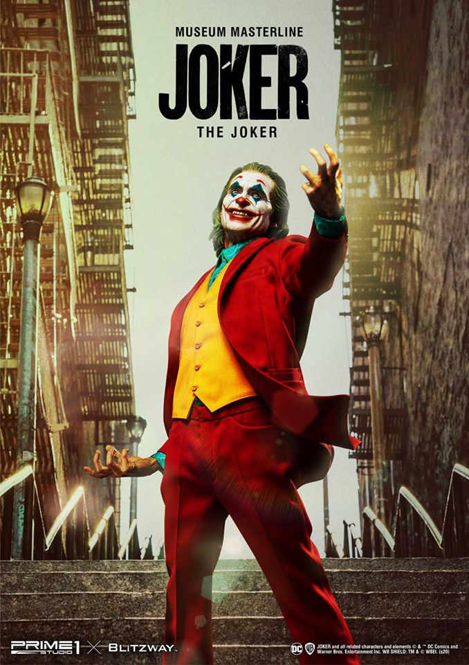

<ons-page id="page2">
  <ons-page ng-controller="Page2Controller as page2" ons-init="page2.init($event)">
    <ons-toolbar style="margin-top: 1cm;">
      <div class="left">
        <ons-back-button>Home</ons-back-button>
      </div>
      <div class="center">{{ myNavigator.topPage.data.title }}</div>
    </ons-toolbar>
    <ons-card>
      
      <div class="title" style="text-align: center;">
        Joker
      </div>
        <p>
          ภาพยนตร์สุดมืดหม่น และเศร้าจับจิต จากค่าย DC (ดีซี) ที่หลายสำนักต่างลงความเห็นกันว่า เป็นภาพยนตร์ที่น่าจับตามองที่สุดในปี 2019 ทั้งในแง่ของเรื่องราว การเล่าเรื่องในหนัง รวมกับการแสดงที่ถือเป็นที่สุด ของ Joaquin Phoenix ที่กลายเป็นตัวเต็งรางวัลต่างๆ มากมาย หนังว่าด้วยเรื่องของอาเธอร์ เฟลค ชายหนุ่มที่จิตใจเต็มเปี่ยมไปด้วยความเศร้า หมองหม่น ทั้งยังถูกกดขี่จากเพื่อน และสังคมที่เขามองว่ามันช่างไร้ซึ่งความยุติธรรมใดๆ หลงเหลืออยู่แม้แต่น้อย จนในที่สุดสิ่งเหล่านี้ ได้หล่อหลอมให้เขากลายมาเป็นมหาวายร้ายที่เราคุ้นตากันดี และรู้จักกันในนาม ‘Joker’ หรือ โจ๊กเกอร์ ตัวร้ายที่มักจะมาพร้อมชุดตัวตลก และใบหน้าเปื้อนยิ้ม คู่ปรับตลอดกาลของฮีโร่ยามรัตติกาลอย่าง Batman
        </p>
      </div>
    </ons-card>
    <div style="text-align: center;">
    <ons-button>Watch Movie</ons-button>
  </div>
  </ons-page>